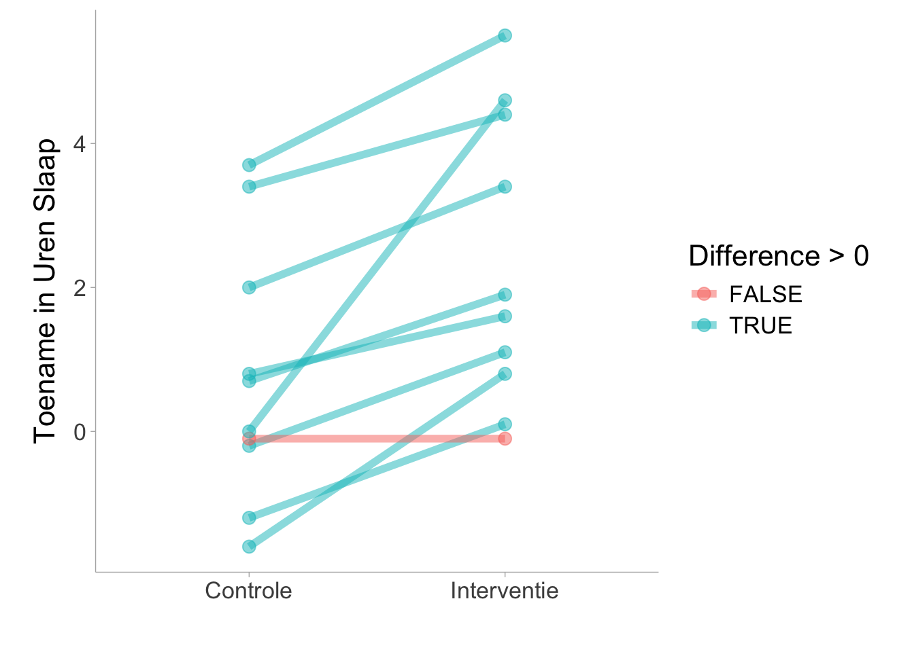

samenwerken, betrouwbaarheidsinterval, effect size, open onderwijsbron, open studiebeurs, open wetenschap
Soms zijn de aannames van parametrische modellen (bijvoorbeeld normaliteit van modelresiduen) verdacht. Dit is vaak het geval in de psychologie bij het gebruik van ordinale schalen. In deze gevallen kan een “niet-parametrische” benadering nuttig zijn. Een statistische test die niet-parametrisch is, betekent dat de parameters (d.w.z. gemiddelde en variantie voor een “normaal” Gaussiaans model) niet worden geschat; ondanks wat vaak wordt gedacht, zijn de gegevens zelf nooit niet-parametrisch. Bovendien zijn deze tests geen tests van de mediaan (Divine et al. 2018). Je kunt ze eerder beschouwen als rangordetests of proportionele kanstests. Als de scores die je analyseert niet metrisch zijn (d.w.z. ordinaal)
Als de scores die je analyseert niet metrisch (d.w.z. ordinaal) zijn door het gebruik van een Likert-schaal en je toch parametrische tests zoals t-tests gebruikt, loop je het risico op een hoge vals-positieve waarschijnlijkheid (bijv. Liddel & Kruschke, 2018). Merk op dat er in het Duits schaalankers zijn ontwikkeld die erg lijken op de Likert-schaal, maar geïnterpreteerd kunnen worden als metrisch (bijv. Rohrmann, 1978).
We zullen hier kort twee groepen tests bespreken die kunnen worden toegepast op de onafhankelijke en gepaarde steekproeven en vervolgens 3 effectgroottes presenteren die bij deze tests kunnen horen, evenals hun berekeningen en voorbeelden in R.
Hier is een tabel voor elke effect size in dit hoofdstuk besproken:
Een eenvoudige transformatie van de rang-biseriële correlatie en het vertegenwoordigt de waarschijnlijkheid van superioriteit in de ene groep ten opzichte van de andere groep. Deze sectie toont R-code voor zowel onafhankelijke als afhankelijke steekproeven.
Ook bekend als de Generalized Odds Ratio, transformeert het de concordantiekans naar een Odds Ratio. Deze sectie toont R-code voor zowel onafhankelijke als afhankelijke steekproeven.
Een niet-parametrisch alternatief voor de t-test is de Wilcoxon-Mann-Whitney (WMW) testgroep. Bij het vergelijken van twee onafhankelijke steekproeven wordt dit een Wilcoxon rank-sum test genoemd, maar soms ook een Mann-Whitney U-test. Bij gebruik op gepaarde steekproeven, of één steekproef, is het een ‘signed rank’-test. Deze worden over het algemeen “symmetrietesten” genoemd (Divine et al. 2018).
Wilcoxon signed rank test with continuity correction
data: extra by group
V = 0, p-value = 0.009091
alternative hypothesis: true location shift is not equal to 0
# Twee steekproeven ------# data geïmporteerd van likertdata(mass, package ="likert")df_mass = mass |>as.data.frame() |> janitor::clean_names() # Functie heeft invoer nodig als numeriek# geordende factoren kunnen worden geconverteerd naar rangen# Nogmaals, de waarschuwing kan worden genegeerdwilcox.test(rank(math_relates_to_my_life) ~ gender,data = df_mass)
Wilcoxon rank sum test with continuity correction
data: rank(math_relates_to_my_life) by gender
W = 23, p-value = 0.1104
alternative hypothesis: true location shift is not equal to 0
12.2 Brunner-Munzel Testen
De tests van Brunner-Munzel kunnen worden gebruikt in plaats van de WMW-tests. De belangrijkste reden hiervoor is de interpretatie van de test (Munzel and Brunner 2002; Brunner and Munzel 2000; Neubert and Brunner 2007). Recentelijk heeft (karch2021psychologen?) betoogd dat de Mann-Whitney test geen fatsoenlijke test is voor gelijkheid van medianen, verdelingen of stochastische gelijkheid. De Brunner-Munzel test daarentegen biedt een zinnige benadering om te testen op stochastische gelijkheid.
De Brunner-Munzeltests meten een op rang gebaseerd “relatief effect” of “stochastische superioriteitskans”. De teststatistiek (\(hat p\)) is in wezen de waarschijnlijkheid dat een waarde in de ene conditie groter is dan in de andere terwijl de banden worden gesplitst1. Brunner-Munzel tests kunnen echter niet worden toegepast op ontwerpen met één groep of één steekproef.
Deze tests zijn relatief nieuw, dus er zijn maar weinig pakketten die Brunner-Munzel aanbieden. Bovendien stelt (karch2021psychologen?) dat de stochastische superioriteitseffectgrootte (\(hat{p}\)) een genuanceerde manier biedt om groepsverschillen te interpreteren door observaties te visualiseren als concurrenten in een wedstrijd. Deze methode, bedacht door wetenschappers als Cliff (1993) en Divine et al. (2018), ziet elke observatie van de ene groep in een duel met elke observatie van een andere groep. Als een observatie van de eerste groep zijn tegenhanger overtreft, “wint” deze en krijgt de groep een punt; gelijke observaties leveren een half punt op voor elke groep. Dit concept kan verder worden uitgelegd aan de hand van een bellenplot, waar plaatsing boven, onder of op de diagonaal de dominantie van de waarneming van de ene groep over de andere aangeeft. Andere interpretaties, zoals p transformeren naar de Wilcoxon-Mann-Whitney (WMW) odds of Cliff’s δ bieden diepere inzichten. Er zijn implementaties van de Brunner-Munzel test in een paar pakketten in R (namelijk lawstat, rankFD en brunnermunzel). Karch (2021) raadt de functie brunnermunzel.permutation.test uit het pakket brunnermunzel aan. Het TOSTER R pakket kan ook dekking bieden (Läkens 2017; Caldwell 2022).
# Installeer pakket voor data opschoning# install.packages('janitor')library(janitor)# Gepaarde steekproevenlibrary(TOSTER)data(sleep)# Als de steekproefomvang klein is# moet een permutatieversie gebruikt worden.# Wanneer dit wordt gedaan, moet er een 'seed' worden ingesteld.set.seed(2124)brunner_munzel(extra ~ group,data = sleep,paired =TRUE,perm =TRUE)
Paired Brunner-Munzel permutation test
data: extra by group
t = -3.7266, df = 9, p-value = 0.003906
alternative hypothesis: true relative effect is not equal to 0.5
95 percent confidence interval:
0.1233862 0.3866138
sample estimates:
p(X<Y) + .5*P(X=Y)
0.255
# Twee steekproeven# data importeren van likertdata(mass, package ="likert")df_mass = mass |>as.data.frame() |>clean_names() # Functie heeft invoer nodig als numeriek# geordende factoren kunnen worden geconverteerd naar rangen# Nogmaals, de waarschuwing kan worden genegeerdset.seed(24111)TOSTER::brunner_munzel(rank(math_relates_to_my_life) ~ gender,data = df_mass,paired =FALSE,perm =TRUE)
two-sample Brunner-Munzel permutation test
data: rank(math_relates_to_my_life) by gender
t = -2.1665, df = 17.953, p-value = 0.0642
alternative hypothesis: true relative effect is not equal to 0.5
95 percent confidence interval:
0.04761905 0.54961243
sample estimates:
p(X<Y) + .5*P(X=Y)
0.2738095
12.3 Rang-gebaseerde Effect Sizes
Aangezien het gemiddelde en de standaarddeviatie niet worden geschat voor een WMW- of Brunner-Munzeltest, zou het ongepast zijn om een gestandaardiseerd gemiddeld verschil (bijvoorbeeld Cohen’s d) te presenteren bij deze tests. In plaats daarvan kan een effectgrootte op basis van rangorde (d.w.z. gebaseerd op de rangorde van de waargenomen waarden) worden gerapporteerd bij de niet-parametrische statistische tests.
12.3.1 Rang-Biseriële correlatie
De rang-biseriële correlatie (\(r_{rb}\)) wordt beschouwd als een maat voor dominantie. De correlatie vertegenwoordigt het verschil tussen het aandeel gunstige en ongunstige paren of ondertekende rangordes. Grotere waarden geven aan dat meer van \(X\) groter is dan meer van \(Y\), waarbij een waarde van (-1) aangeeft dat alle waarnemingen in de tweede groep, \(Y\), groter zijn dan de eerste groep, \(X\), en een waarde van (+1) aangeeft dat alle waarnemingen in de eerste groep groter zijn dan de tweede.
We kunnen een constante, \(H\), op -1 zetten als de positieve rangorde groter of gelijk is aan de negatieve rangorde (\(R_{\oplus} \ge R_{\ominus}\)) of we kunnen \(H\) op 1 zetten als de positieve rangorde kleiner is dan de negatieve rangorde (\(R_{\oplus} < R_{\ominus}\)).
Dan kan het betrouwbaarheidsinterval worden berekend en terugvertaald.
\[
CI_{r_{rb}} = \text{tanh}(Z_{rb} \pm 1.96 \cdot SE_{Z_{rb}})
\] In R kunnen we de functie ses_calc() uit het pakket TOSTER gebruiken (Läkens 2017). In het volgende voorbeeld berekenen we de rang-biseriële correlatie in de slaapdataset:
# Afhankelijke groependata(sleep)library(TOSTER)# Als de steekproefomvang klein is# moet een permutatieversie gebruikt worden.# Wanneer dit wordt gedaan, moet er een zaad worden ingesteld.set.seed(2124)ses_calc(extra ~ group,data = sleep,paired =TRUE)
Het voorbeeld toont een rang-biseriële correlatie van \(r_{rb}\) = .982 [.938, .995]. Dit suggereert dat bijna elk individu in de steekproef een toename vertoonde in toestand 2 ten opzichte van toestand 1. Zoals je in de onderstaande figuur kunt zien, vertoonde slechts één individu een achteruitgang (individu in rood weergegeven).

12.3.1.2 Onafhankelijke Groepen
Bereken de rangorde voor elke observatie over alle observaties van groep 1 en 2
In R kunnen we ses_calc in het pakket TOSTER gebruiken om \(r_{rb}\) te berekenen.
# Twee steekproeven# installeer het janitor-pakket voor het opschonen van gegevens# gegevens opschonen en importeren uit likertdata(mass, package ="likert")df_mass = mass |>as.data.frame() |> janitor::clean_names() # Functie heeft invoer nodig als numeriek# geordende factoren kunnen worden geconverteerd naar rangen# Nogmaals, de waarschuwing kan worden genegeerdset.seed(24111)ses_calc(rank(math_relates_to_my_life) ~ gender,data = df_mass,paired =FALSE)
Het voorbeeld toont een rang-biseriële correlatie van \(r_{rb}\) = -.45 [-.78, .08].
12.3.2 Overeenstemmingswaarschijnlijkheid
In het geval van twee steekproeven is de concordantiekans de kans dat een willekeurig gekozen proefpersoon uit de ene groep een respons heeft die groter is dan die van een willekeurig gekozen proefpersoon uit de andere groep. In het geval van twee steekproeven is dit ongeveer gelijk aan de statistiek van de Brunner-Munzel test. In het geval van gepaarde steekproeven is het de kans dat een willekeurig gekozen verschilscore (\(D\)) een positief (+) teken heeft plus 0,5 keer de kans op een gelijkspel (geen/nul verschil). De concordantiekans kan vele namen hebben. Het wordt ook wel de c-index, de niet-parametrische waarschijnlijkheid van superioriteit of de niet-parametrische gemeenschappelijke taal effectgrootte (CLES) genoemd. De berekening van concordantie kan worden afgeleid uit de rang-biseriële correlatie. De concordantiekans (\(p_c\)) kan worden geconverteerd uit de correlatie.
\[
p_c = \frac{r_{rb} + 1 }{2}
\]
In R kunnen we de ses_calc() functie weer gebruiken samen met de slaapdataset. Voor experimenten met herhaalde metingen kan de concordantiekans in afhankelijke groepen worden berekend met het paired=TRUE argument in de ses_calc() functie:
De Wilcoxon-Mann-Whitney odds (O’Brien and Castelloe 2006), ook bekend als de “Generalized Odds Ratio” (Agresti 1980), transformeert in wezen de concordantiekans in een oddsratio.
De kansen kunnen worden geconverteerd uit de concordantie door de logit van de concordantie te nemen. Dit geeft de log odds.
De exponentiële waarde van de log-kansen geeft de kansen op een meer interpreteerbare schaal. Als we alleen de logit van de concordantiekans nemen, krijgen we de logkans op zo’n manier dat,
\[
\log(O_{WMW}) = \text{logit}(p_c)
\]
In R kunnen we \(O_{WMW}\) berekenen met de ses_calc() functie uit het TOSTER pakket:
Divine, George W, H James Norton, Anna E Barón, and Elizabeth Juarez-Colunga. 2018. “The Wilcoxon–Mann–Whitney Procedure Fails as a Test of Medians.”The American Statistician 72 (3): 278–86.
Karch, Julian D. 2021. “Psychologists Should Use Brunner-Munzel’s Instead of Mann-Whitney’s u Test as the Default Nonparametric Procedure.”Advances in Methods and Practices in Psychological Science 4 (2): 2515245921999602.
Läkens, Daniel. 2017. “Equivalence Tests: A Practical Primer for t-Tests, Correlations, and Meta-Analyses.”Social Psychological and Personality Science 1: 1–8. https://doi.org/10.1177/1948550617697177.
Neubert, Karin, and Edgar Brunner. 2007. “A Studentized Permutation Test for the Non-Parametric Behrensfisher Problem.”Computational Statistics & Data Analysis 51 (10): 5192–5204. https://doi.org/10.1016/j.csda.2006.05.024.
O’Brien, Ralph G, and John Castelloe. 2006. “Exploiting the Link Between the Wilcoxon-Mann-Whitney Test and a Simple Odds Statistic.” In Proceedings of the Thirty-First Annual SAS Users Group International Conference, 209–31. Citeseer.
Merk op dat dit voor gepaarde steekproeven niet verwijst naar de waarschijnlijkheid van een toename/afname in de gepaarde steekproef, maar eerder naar de waarschijnlijkheid dat een willekeurig gekozen waarde van X groter/minder zal zijn dan Y. Dit wordt in de literatuur ook wel het “relatieve” effect genoemd. Daarom zullen de resultaten verschillen van de concordantiekans. \[
\hat{p} = P(X<Y)+ \frac{1}{2} \cdot P(X=Y)
\]↩︎